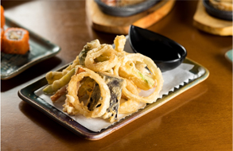
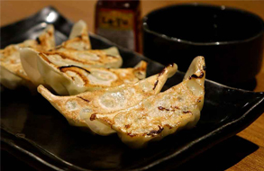

 Tempurá Tempurá Frutos do mar, como camarão, independentemente do recheio, o tempurá vem acompanhado de molho. R$49,90 und.
Hot Roll Hot Roll Salmão, Cream cheese, folha de algas, arroz, gergilim, empanado na farinha panco. R$45,10 und.
 Guioza Tradicional Guioza Esse prato é um bolinho com massa fininha e recheio de legumes ou carne moída. R$40,00